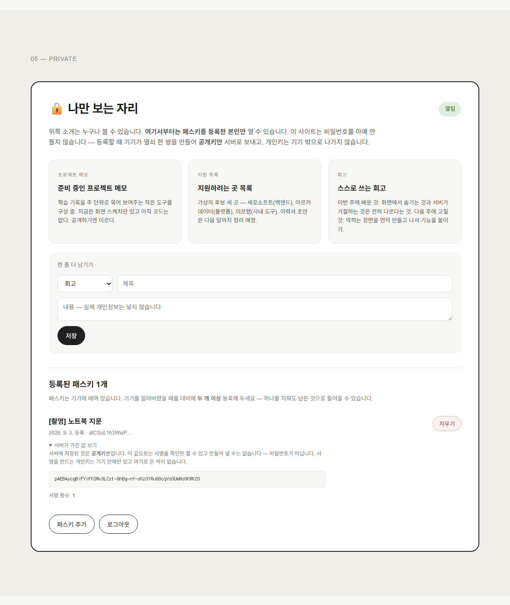
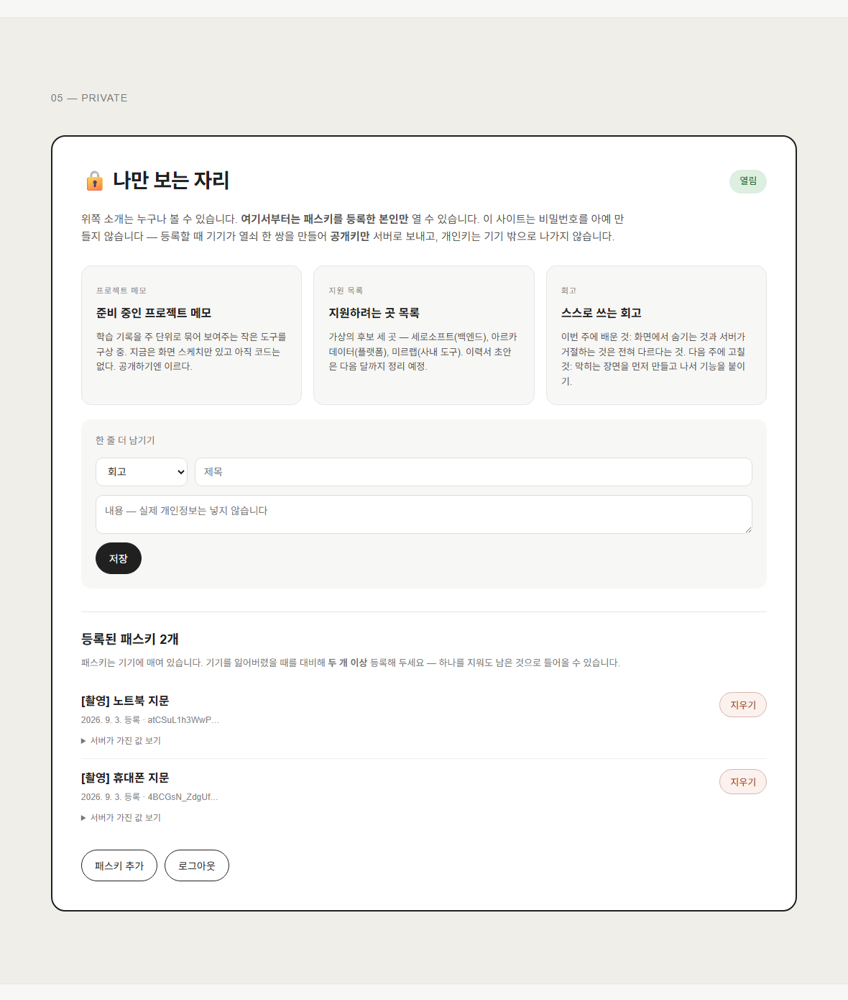
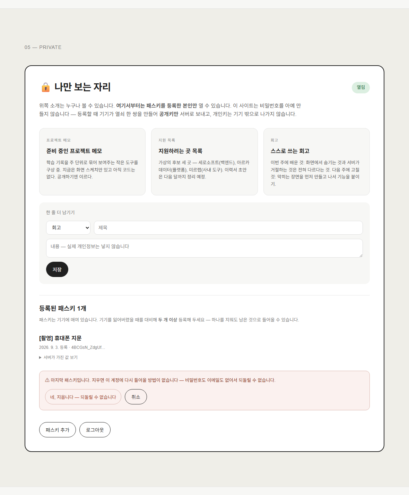
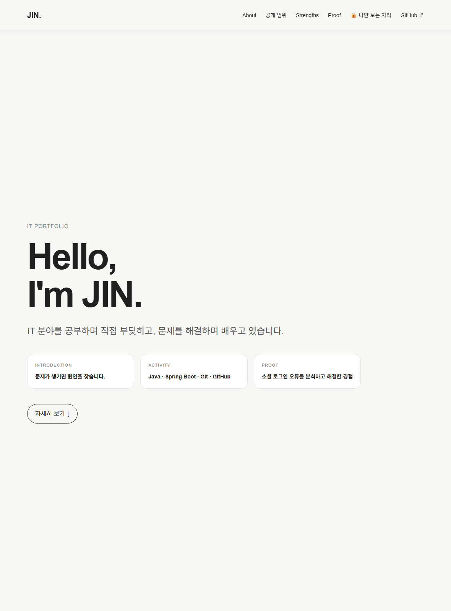
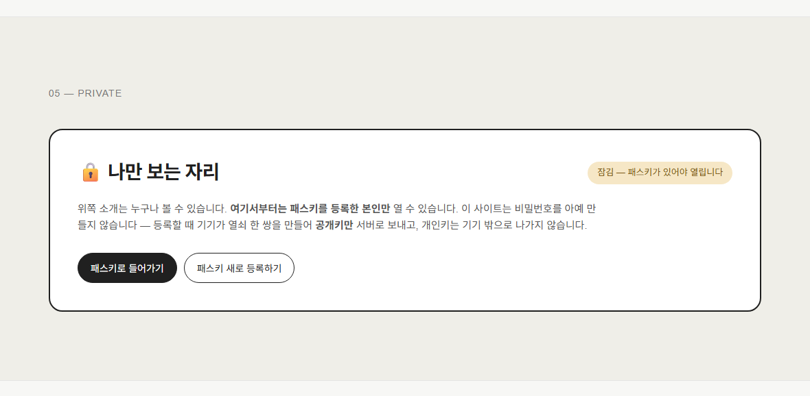
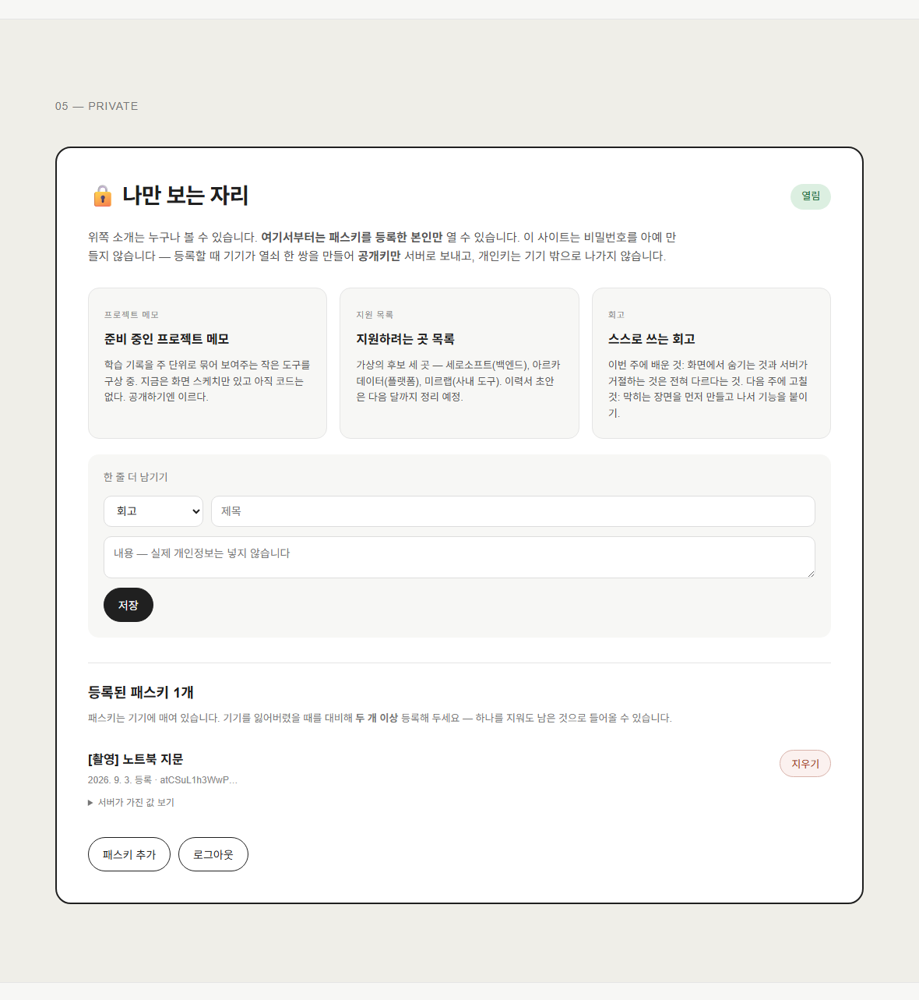
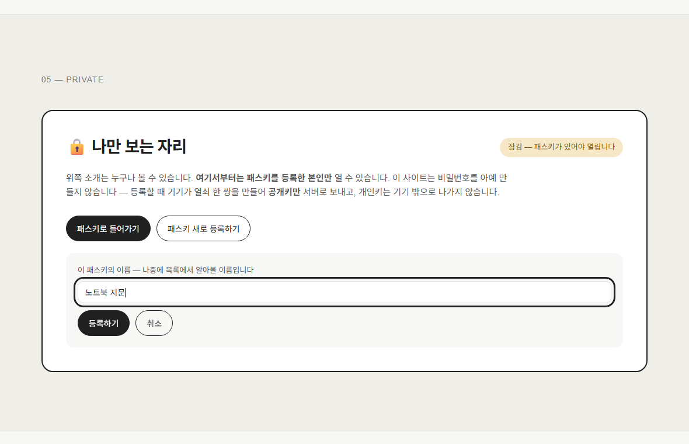
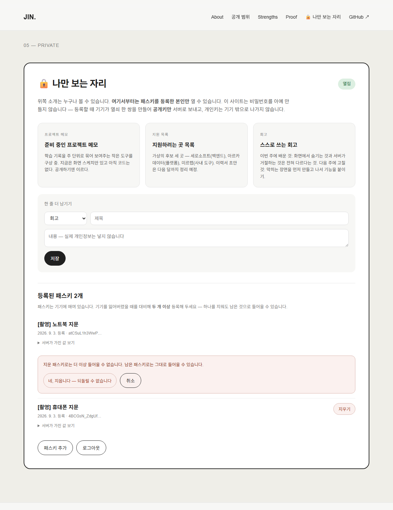
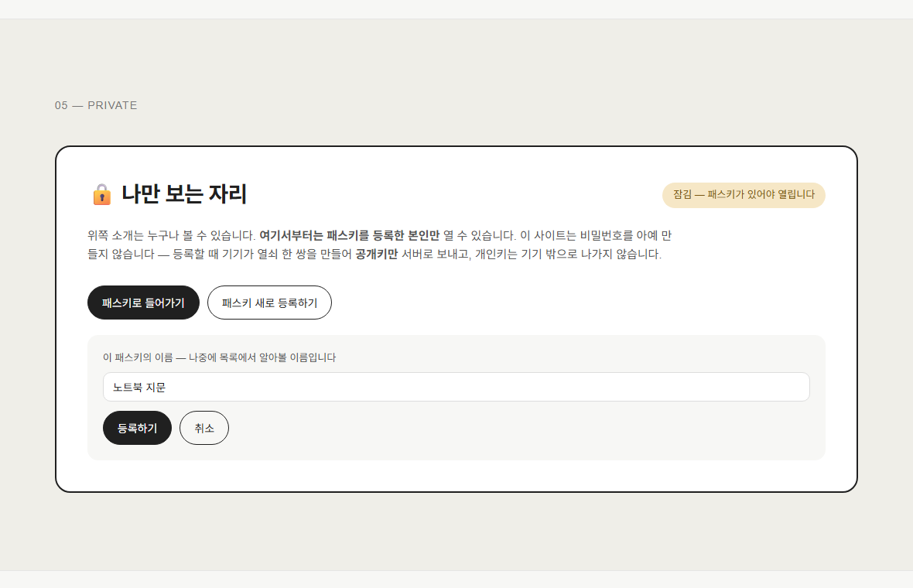
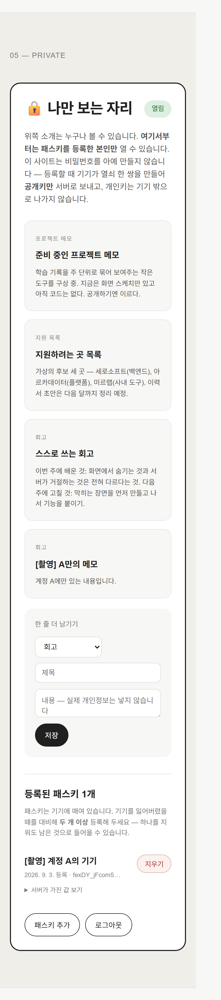

과제 8 · 제출 보고서
공개 소개는 그대로 두고, 새로 만든 “나만 보는 자리”만 패스키로 잠갔습니다.
막았다는 문장 대신 막히는 장면(성공한 요청과 거절된 요청)으로 보입니다.
https://aleph-passkey.vercel.app — 첫 화면은 누구나 볼 수 있는 공개 소개 페이지입니다. 계정을 만들 필요도, 로그인할 필요도 없습니다.
① 페이지 맨 아래 🔒 나만 보는 자리에서 “패스키 새로 등록하기”를 눌러 기기의 지문·얼굴·PIN으로 등록합니다. ② 열린 자리에 메모를 한 줄 남깁니다. ③ “로그아웃”을 누른 뒤 같은 자리를 다시 봅니다.
①·② 뒤에는 잠금 배지가 열림으로 바뀌고 비공개 항목이 보입니다. ③ 뒤에는 다시 잠김으로 돌아가고 내용이 사라집니다. 이때 브라우저에서 페이지 소스를 열어 봐도 비공개 내용은 없습니다.
패스키를 지원하지 않는 브라우저면 “이 브라우저는 패스키를 지원하지 않습니다”라는 안내가 뜨고 버튼이 꺼집니다. 등록 도중 지문 창을 닫으면 “등록을 취소했습니다. 서버에는 계정도 패스키도 만들어지지 않았습니다”가 뜹니다. 기기에 패스키가 하나도 없는 상태에서 “패스키로 들어가기”를 누르면 브라우저가 고를 것이 없다고 알려 줍니다.
WebAuthn(FIDO2) 표준을 씁니다. 비밀번호는 아예 만들지 않았습니다. 직접 구현한 것이 아니라 아래 조각들을 골라 썼습니다.
| 자리 | 쓴 것 | 무엇을 맡겼나 |
|---|---|---|
| 브라우저 | navigator.credentials.create() / .get() (브라우저·OS 내장) | 키 쌍 생성, 개인키 보관, 지문·얼굴·PIN 확인, 서명 |
| 서버 검증 | @simplewebauthn/server 13.3.3 (MIT) | 질문(challenge) 생성, 서명·origin·rpID 검증, 서명 횟수 확인 |
| 서버 실행 | Vercel 서버리스 함수 (Node) | api/ 폴더의 파일 하나가 주소 하나 |
| 저장소 | Supabase Postgres (service_role, 서버에서만) | 공개키·질문·세션·비공개 자료 |
| 브라우저 쪽 연결 코드 | 직접 작성 (app.js 약 40줄) | base64url ↔ ArrayBuffer 형식 변환만. 보안 판단은 한 줄도 없음 |
| 후보 | 고르지 않은 이유 |
|---|---|
| CBOR·COSE 파싱을 손으로 구현 | WebAuthn 규격이 이미 재생 공격 방지·origin 묶기·서명 확인을 다 정의해 두었습니다. 이 과제의 배점은 표준을 이해하고 잘 고르는 것이지 바이트 파서를 다시 만드는 것이 아닙니다. |
| Firebase Auth · Auth0 등 SaaS의 패스키 기능 | 질문 생성과 검증이 통째로 남의 상자 안으로 들어가, 카드 2·3이 요구하는 “서버가 질문을 어떻게 만들고 어떻게 확인하는지”를 설명할 수 없게 됩니다. |
| 아이디·비밀번호를 예비 수단으로 남기기 | 비밀번호를 하나라도 남기면 “비밀번호를 쓰지 않는다”가 사실이 아니게 됩니다. 잠금이 가장 약한 곳의 세기로 정해지기 때문입니다. |
| JWT 같은 서명된 토큰으로 세션 만들기 | 서명만으로 판단하면 로그아웃해도 만료 전까지 그 토큰이 살아 있습니다. 서버가 세션 행을 직접 들고 있으면 로그아웃이 곧 삭제라 그 즉시 끊깁니다. |
맡아 두지 않습니다. 비밀번호가 처음부터 없습니다.
화면 어디에도 비밀번호를 입력하는 칸이 없고, 소스 전체에도 type="password"가 없습니다. PASS · 검사 8 (T08-C35)
대신 서버가 갖고 있는 것은 공개키 하나입니다. 등록할 때 기기가 열쇠 한 쌍을 만들어 공개키만 보내고, 서명을 만드는 개인키는 기기 밖으로 나오지 않습니다.
| 기록된 값 | |
|---|---|
| 패스키 이름 | [촬영] 노트북 지문 |
| credential id | atCSuL1h3WwP… |
| 공개키 | pAEBAycgBiFYIFfDWu3LCzt-GhBg-nY-sKzO1RuG8cqVs0UmNs8KWK2O |
| 이 값의 정체 | COSE 형식의 공개키. 서명을 확인할 수는 있지만 만들어 낼 수는 없다 — 비밀번호도, 비밀번호의 해시도 아니다. |
| 패스키가 저장된 곳 | 이 촬영은 크롬의 가상 authenticator(소프트웨어 기기)를 썼다. 실제 사용에서는 기기 자체(윈도우 Hello·터치 ID) 또는 구글 비밀번호 관리자·보안 키에 저장된다 (T08-C26). |
PASS · 검사 13 (T08-C21) PASS · 검사 14 (T08-C22)

| 기록된 값 | |
|---|---|
| 요청 본문의 필드 | id, rawId, type, clientExtensionResults, response, authenticatorAttachment |
| response 안의 필드 | clientDataJSON, attestationObject, transports |
| 설명 | 개인키를 담는 자리가 아예 없다 — WebAuthn 규격에 그런 필드가 존재하지 않는다. 개인키는 기기(authenticator) 안에서 만들어져 그 안에만 남는다. |
| 응답 상태 | 200 |
PASS · 검사 15 (T08-C23)
| 기록된 값 | |
|---|---|
| 방식 | 서버가 들고 있는 세션 (JWT 같은 토큰이 아니다) |
| 쿠키 | pk_session=•••••••••• (값은 가림) |
| 속성 | HttpOnly=true, Secure=false, SameSite=Lax, 만료 12시간 |
| 값 안에 담긴 정보 | 없음 — 그저 pk_sessions 테이블의 행 하나를 가리키는 무작위 id다 |
| 페이지에서 읽히는가 | 아니오. document.cookie = "" (HttpOnly라 스크립트가 못 읽는다) |
PASS · 검사 23 (T08-C32) PASS · 검사 24 (T08-C34)
세션입니다. 토큰이 아닙니다. 쿠키에 실려 오가는 값은 pk_sessions 테이블의 행 하나를 가리키는
무작위 id일 뿐이고, 값 자체에는 아무 정보도 담겨 있지 않습니다. 그래서 로그아웃은 그 행을 지우는 것이고,
지우는 순간 같은 값으로는 아무것도 열리지 않습니다.
| 기록된 값 | |
|---|---|
| 로그아웃 전 | GET /api/private-notes (Cookie: pk_session=••••) → 200, 내 자료 3건 |
| 로그아웃 후 | GET /api/private-notes (같은 값) → 401 {"error":"로그인이 필요합니다."} |
| 설명 | 로그아웃이 세션 행을 지우므로, 그 값은 그 즉시 아무 의미가 없다. |
PASS · 검사 25 (T08-C33)
| 흐름 | 지나는 자리 | 하는 일 |
|---|---|---|
| 등록 | app.js registerPasskey→ api/register/options.js→ 기기 → api/register/verify.js→ lib/store.js | 질문 발급·보관 → 기기가 키 쌍 생성 → 서명·origin 검증 → 공개키 저장 → 세션 발급 |
| 로그인 | app.js loginWithPasskey→ api/login/options.js→ 기기 → api/login/verify.js | 새 질문 발급 → 기기가 개인키로 서명 → 저장된 공개키로 확인 → 질문 소진 → 세션 발급 |
| 응답(누구인지) | lib/session.js currentUser / requireUser← api/me.js | 쿠키의 세션 id로 pk_sessions 조회. 없으면 401 |
| 비공개 조회 | api/private-notes/index.jsapi/private-notes/[id].js | requireUser 통과 뒤, 세션이 가리키는 계정의 자료만 읽고 씀. 남의 것이면 404 |
| 기록된 값 | |
|---|---|
| 요청 1 | GET http://localhost:5179/api/private-notes (쿠키 없음) |
| 응답 1 | 401 {"error":"로그인이 필요합니다."} |
| 요청 2 | GET http://localhost:5179/api/private-notes/00000000-… (쿠키 없음) |
| 응답 2 | 401 {"error":"로그인이 필요합니다."} |
| 설명 | 화면에서 숨긴 것이 아니라 서버가 401로 끊는다. 몸통에 비공개 내용이 한 글자도 없다. |
PASS · 검사 6 (T08-C16) PASS · 검사 7 (T08-C17)
| 기록된 값 | |
|---|---|
| 길이 | 28502바이트 |
| 비공개 문구 포함 여부 | 없음 — 비공개 내용은 인증을 통과한 뒤 app.js가 받아 와 채운다 |
| 설명 | CSS로 숨기는 방식이었다면 소스에는 그대로 남아 있었을 것이다. |
PASS · 검사 5 (T08-C18)
| 기록된 값 | |
|---|---|
| B → 자기 자료 | GET /api/private-notes/f369992e-7b6a-40f2-8c98-752879eccf7b → 200 "[촬영] B만의 메모" |
| B → A의 자료 | GET /api/private-notes/dfa63aca-6362-4a05-9e5b-e41ad331bcc8 → 404 "그런 자료가 없습니다." |
| A → 자기 자료 | GET /api/private-notes/dfa63aca-6362-4a05-9e5b-e41ad331bcc8 → 200 "[촬영] A만의 메모" |
| A → B의 자료 | GET /api/private-notes/f369992e-7b6a-40f2-8c98-752879eccf7b → 404 "그런 자료가 없습니다." |
| 왜 403이 아니라 404인가 | 403은 '있지만 권한이 없다'는 뜻이라, 그 id가 존재한다는 사실 자체를 알려주게 된다. 그래서 없는 것과 똑같이 답한다. |
PASS · 검사 31 (T08-C37) PASS · 검사 32 (T08-C38)
| 기록된 값 | |
|---|---|
| 거절 전 A의 건수 | 4건 |
| 거절 후 A의 건수 | 4건 |
| 설명 | 거절이 상대편 자료를 건드리지도, 새로 만들지도 않았다. |
PASS · 검사 33 (T08-C39)
| 기록된 값 | |
|---|---|
| 요청 | POST /api/private-notes 본문: { "title": "…", "user_id": "(A의 계정 id)" } ← B의 세션으로 보냄 |
| 저장결과 | 201 — 저장된 주인은 B(요청을 보낸 사람) |
| A가 그 자료를 볼 수 있는가 | GET /api/private-notes/e9765a82-6cd6-47f9-9586-97b727ad6919 → 404 (못 본다) |
| B의 목록에는 | 있다 |
| 이 거절을 만드는 곳 | api/private-notes/index.js — createNote에 넘기는 userId가 요청 본문이 아니라 세션(requireUser)에서 나온다. 클라이언트가 주인을 고를 수 있는 경로가 코드에 아예 없다. |
PASS · 검사 34 (T08-C40)
| 기록된 값 | |
|---|---|
| 첫 번째 요청 | POST /api/login/verify (challengeId 6e8f73ff-9a59-4ec8-aaeb-7dfe57fcc335) → 200 |
| 두 번째 요청 | POST /api/login/verify (같은 challengeId, 같은 서명) → 400 "이미 사용된 확인 질문입니다." |
| 설명 | 질문이 쓰이는 순간 used_at이 찍혀, 같은 서명을 재전송해도 통하지 않는다. |
PASS · 검사 22 (T08-C31)
| 기록된 값 | |
|---|---|
| 성공 — 요청 | POST /api/login/verify (기기가 개인키로 서명한 응답 그대로) |
| 성공 — 응답 | 200 {"ok":true,"deviceName":"[촬영] 노트북 지문"} |
| 실패 — 요청 | POST /api/login/verify (같은 주소·같은 방식, 서명만 한 글자 다름) |
| 실패 — 응답 | 401 {"error":"서명을 확인하지 못했습니다."} |
| 설명 | 서버가 저장해 둔 공개키로 서명을 확인한 뒤에만 통과시킨다. |
PASS · 검사 20 (T08-C29) PASS · 검사 21 (T08-C30)
| 기록된 값 | |
|---|---|
| 지운것 | "[촬영] 노트북 지문" (남은 패스키 1개) |
| 지운 기기로 로그인 | 401 "등록되지 않은 패스키입니다." |
| 남은 기기로 로그인 | 200 성공 — "[촬영] 휴대폰 지문" |
| 설명 | 패스키를 두 개 등록해 둔 덕분에, 기기 하나를 잃어도 계정을 잃지 않는다. |
PASS · 검사 28 (T08-C44) PASS · 검사 29 (T08-C45)

| 기록된 값 | |
|---|---|
| 화면 경고 | ⚠ 마지막 패스키입니다. 지우면 이 계정에 다시 들어올 방법이 없습니다 — 비밀번호도 이메일도 없어서 되돌릴 수 없습니다. |
| 결과 | 남은 패스키 0개, 계정 접근 불가 = true |
| 다시 들어가려는 시도 | 401 "등록되지 않은 패스키입니다." |
| 왜 막지 않았나 | 막을 수도 있었지만 막지 않았다. 되살릴 수단(이메일·비밀번호)을 두지 않기로 한 이상, '못 지우게 하는 것'은 문제를 미루는 것이지 푸는 것이 아니다. 대신 지우기 전에 화면에서 분명히 경고한다. |
PASS · 검사 35 (T08-C46)

확인 네 가지를 모두 통과했지만, 다 막았다고 적지 않겠습니다. 만들면서 실제로 확인한 한계는 아래와 같습니다.
1. 잠금이 풀린 기기를 그대로 쓰는 사람은 막지 못합니다.
이 사이트는 userVerification: "preferred"로 두었습니다. PIN이 없는 보안 키도 쓸 수 있게 하려는 선택인데,
그 대가로 기기가 이미 잠금 해제되어 있으면 지문 확인 없이도 패스키가 응답할 수 있습니다.
남이 내 잠금 해제된 노트북 앞에 앉으면 그대로 열립니다. "required"로 바꾸면 막히지만, 그러면 일부 보안 키를 쓸 수 없습니다.
2. 세션이 12시간 살아 있고, 그동안 다시 확인하지 않습니다. 로그인한 뒤에는 비공개 자료를 보거나 지울 때 패스키를 다시 요구하지 않습니다. 로그아웃하지 않은 채 자리를 뜨면 그 시간 동안은 열려 있습니다. 민감한 동작(패스키 삭제)에는 재확인을 넣는 게 맞지만 아직 넣지 못했습니다.
3. 비공개 자료는 서버에 그냥 저장됩니다.
자료 자체를 암호화하지 않았기 때문에, 서버의 SUPABASE_SERVICE_ROLE_KEY가 새면 전부 읽힙니다.
패스키가 막는 것은 “바깥에서 들어오는 길”이지 “서버 안에서 보는 눈”이 아닙니다.
4. 계정을 되살릴 방법이 전혀 없습니다. 기기를 전부 잃거나 마지막 패스키를 지우면 그 계정은 영원히 닫힙니다(검사 35). 일부러 그렇게 두었고 화면에서 경고도 하지만, 실제 서비스라면 복구 코드 같은 예비 수단이 필요합니다.
5. 다 쓴 질문 기록을 청소하지 않습니다.
pk_challenges는 만료돼도 지워지지 않고 계속 쌓입니다. 동작에는 문제가 없지만(만료·사용 여부를 매번 확인합니다) 관리 작업이 빠져 있습니다.
공개 영역은 과제 1에서 만든 소개 페이지 그대로입니다. 문장 하나 바꾸지 않았고, 검사 2가 원본 커밋(cb23773)에서
글자를 뽑아 지금 페이지와 한 줄씩 대조합니다. PASS · 검사 2 (T08-C11)
그 아래에 🔒 나만 보는 자리를 새로 만들었습니다. 배경색과 테두리를 달리해 어디까지가 공개이고 어디부터가 비공개인지 한눈에 보이게 했고, 지금 잠겨 있는지 열려 있는지도 배지로 밝힙니다. PASS · 검사 3 (T08-C13) PASS · 검사 1 (T08-C10)



PASS · 검사 4 (T08-C15) PASS · 검사 17 (T08-C14) PASS · 검사 9 (T08-C12)
app.js가 서버에서 내용을 받아 채웁니다. CSS로 숨겼다면 페이지 소스에는 그대로 남았을 것입니다.| 기록된 값 | |
|---|---|
| 첫 번째 요청 | POST /api/register/options |
| 첫 번째 challenge | ElzTPyV2EWZkrbqNt9wiWBsS4BOe5GvQPXbOJqfz4S8 |
| 두 번째 challenge | T5Ad1c69GGJ1xBKfh8GAi9G6mlg_yP616YOMy-ziuG0 |
| 같은가 | 다르다 |
| 보관 | 서버가 pk_challenges에 넣어 두고, 확인 단계에서 딱 한 번만 쓴 뒤 used_at을 찍는다 |
PASS · 검사 10 (T08-C19) PASS · 검사 11 (T08-C20)

PASS · 검사 16 (T08-C24)
| 기록된 값 | |
|---|---|
| 결과 | 기기 확인 단계에서 취소됨 (AbortError) |
| 화면 안내 | 등록을 취소했습니다. 서버에는 계정도 패스키도 만들어지지 않았습니다. |
| 서버에 저장된 것 | 없음 — 계정도 자격증명도 만들어지지 않는다. 남는 것은 2분 뒤 만료되는 질문 한 줄뿐이고, 그건 계정이 아니다. |
PASS · 검사 12 (T08-C25)
| 기록된 값 | |
|---|---|
| 첫 번째 challenge | J5e16K28XsKnPXip-DnzQz3dKtZqv5wqPWQWOSIpSQ4 |
| 두 번째 challenge | ZScYNZRw3INF3kxQXDKLP8X-57I94wNWUr3gPu10y4o |
| 같은가 | 다르다 |
PASS · 검사 18 (T08-C27) PASS · 검사 19 (T08-C28)
패스키는 기기에 매여 있습니다. 하나뿐이면 그 기기를 잃는 순간 계정도 잃습니다. 그래서 패스키를 두 개 등록해 두고, 하나를 지운 뒤에도 남은 하나로 들어갈 수 있는지 실제로 확인했습니다.
PASS · 검사 26 (T08-C42) PASS · 검사 27 (T08-C43)



사람 눈이 아니라 명령 하나가 판정합니다. 패스키는 원래 지문이나 보안 키가 있어야 시험할 수 있지만, 크롬 개발자 프로토콜의 가상 authenticator를 붙이면 실제 기기와 똑같이 키 쌍을 만들고 서명하게 할 수 있어 등록·로그인·기기 분실·계정 격리를 전부 자동으로 재현했습니다.
검사 대상: http://localhost:5179 · 기록: portfolio-passkey-2026-09-03-10-42.json
| # | 코드 | 카드 | 검사 | 결과 |
|---|---|---|---|---|
| 1 | T08-C10 | 카드5 | 첫 화면이 공개 소개 페이지이고, 아무것도 등록하지 않아도 열린다 | PASS |
| 2 | T08-C11 | 카드5 | 과제 1의 공개 내용이 한 줄도 빠짐없이 그대로 남아 있다 | PASS |
| 3 | T08-C13 | 카드1 | 공개 영역과 비공개 영역이 화면에서 구분되어 보인다 | PASS |
| 4 | T08-C15 | 카드1 | 패스키로 들어가지 않은 상태에서는 비공개 내용이 화면에 없다 | PASS |
| 5 | T08-C18 | 카드1 | 로그인하지 않은 채 받은 페이지 소스 어디에도 비공개 내용이 없다 | PASS |
| 6 | T08-C16 | 카드1 | 비공개 자료를 서버에 직접 요청하면 거절된다 | PASS |
| 7 | T08-C17 | 카드1 | 그 거절이 401 또는 403으로 이루어진다 | PASS |
| 8 | T08-C35 | 카드3 | 제출물 어디에도 비밀번호를 입력하는 칸이 없다 | PASS |
| 9 | T08-C12 | 카드5 | 제출물에 실제 연락처·신분증 번호 같은 개인정보가 없다 | PASS |
| 10 | T08-C19 | 카드2 | 서버가 등록용 질문을 만들어 보내고, 확인할 때까지 보관한다 | PASS |
| 11 | T08-C20 | 카드2 | 등록 요청마다 질문 값이 서로 다르다 | PASS |
| 12 | T08-C25 | 카드2 | 등록을 중간에 취소하면 계정도 패스키도 만들어지지 않는다 | PASS |
| 13 | T08-C21 | 카드2 | 등록이 끝나면 서버에 공개키가 저장된다 | PASS |
| 14 | T08-C22 | 카드2 | 저장된 값이 공개키다 — 비밀번호가 아니다 | PASS |
| 15 | T08-C23 | 카드2 | 등록 요청 본문에 개인키가 실려 있지 않다 | PASS |
| 16 | T08-C24 | 카드2 | 등록한 패스키에 사람이 알아볼 수 있는 이름이 붙는다 | PASS |
| 17 | T08-C14 | 카드1 | 비공개 영역에 들어간 항목이 세 개 이상이다 | PASS |
| 18 | T08-C27 | 카드3 | 로그인할 때도 서버가 매번 새 질문을 만들어 보낸다 | PASS |
| 19 | T08-C28 | 카드3 | 로그인 요청마다 질문 값이 서로 다르다 | PASS |
| 20 | T08-C29 | 카드3 | 서버가 저장해 둔 공개키로 서명을 확인한 뒤에만 통과시킨다 | PASS |
| 21 | T08-C30 | 카드3 | 서명이 한 글자만 달라도 거절된다 (성공 요청과 나란히) | PASS |
| 22 | T08-C31 | 카드3 | 이미 한 번 쓴 질문으로 다시 로그인하려 하면 거절된다 | PASS |
| 23 | T08-C32 | 카드3 | 로그인 뒤 사람을 알아보는 것은 세션이다 (서버가 들고 있는 값) | PASS |
| 24 | T08-C34 | 카드3 | 세션 값이 페이지의 자바스크립트에 노출되지 않는다 | PASS |
| 25 | T08-C33 | 카드3 | 로그아웃한 뒤 같은 세션 값으로 다시 요청하면 거절된다 | PASS |
| 26 | T08-C42 | 카드4 | 한 계정에 패스키가 두 개 등록되어 있다 | PASS |
| 27 | T08-C43 | 카드4 | 패스키 목록에 각각의 이름과 등록한 날짜가 보인다 | PASS |
| 28 | T08-C44 | 카드4 | 패스키 하나를 지운 뒤 남은 하나로 들어갈 수 있다 | PASS |
| 29 | T08-C45 | 카드4 | 지운 패스키로는 더 이상 들어갈 수 없다 | PASS |
| 30 | T08-C36 | 카드5 | 패스키를 등록한 계정이 두 개이고, 각각 서로 다른 비공개 내용이 있다 | PASS |
| 31 | T08-C37 | 카드5 | 한쪽 패스키로 다른 쪽 비공개 자료를 읽으려는 요청이 거절된다 | PASS |
| 32 | T08-C38 | 카드5 | 반대 방향(다른 쪽에서 첫 쪽으로)의 요청도 똑같이 거절된다 | PASS |
| 33 | T08-C39 | 카드5 | 거절 앞뒤로 반대편의 자료 건수가 같다 | PASS |
| 34 | T08-C40 | 카드5 | 요청 본문에 남의 계정 id를 적어 보내도 내 자료로만 저장된다 | PASS |
| 35 | T08-C46 | 카드4 | 마지막 패스키를 지우면 그 계정은 더 이상 열 수 없다 | PASS |
WebAuthn 등록·로그인 흐름의 구현(서버 API와 브라우저 연결 코드), 저장소 스키마, 그리고 가상 authenticator를 쓰는 검사·촬영 도구 작성을 맡겼습니다. 표준 규격을 정확히 옮기는 일과, 손으로는 재현하기 번거로운 “기기를 바꿔 끼우는” 시나리오를 자동화하는 일이었습니다.
어떤 인증 수단을 쓸지 — 지문·Face ID 같은 기기 내장 방식을 기본으로 하고, 기기 분실 대비 두 번째 패스키는 다른 기기나 USB 보안 키로 두기로 정했습니다. 무엇을 공개하고 무엇을 비공개로 둘지(프로젝트 메모·지원 목록·회고), 그리고 비공개 자리에 실제 개인정보를 넣지 않고 전부 지어낸 내용만 쓰기로 한 것도 제 판단입니다.
처음 설계안은 브라우저 쪽도 @simplewebauthn/browser를 외부 CDN에서 불러다 쓰자는 것이었습니다.
따르지 않았습니다 — 브라우저 쪽이 하는 일은 자료 형식 변환 40줄이 전부인데, 그것 때문에 페이지가 외부 CDN에
의존하게 되는 것이 맞지 않다고 봤습니다. 정작 중요한 서명 검증은 그대로 표준 라이브러리에 맡겼습니다.